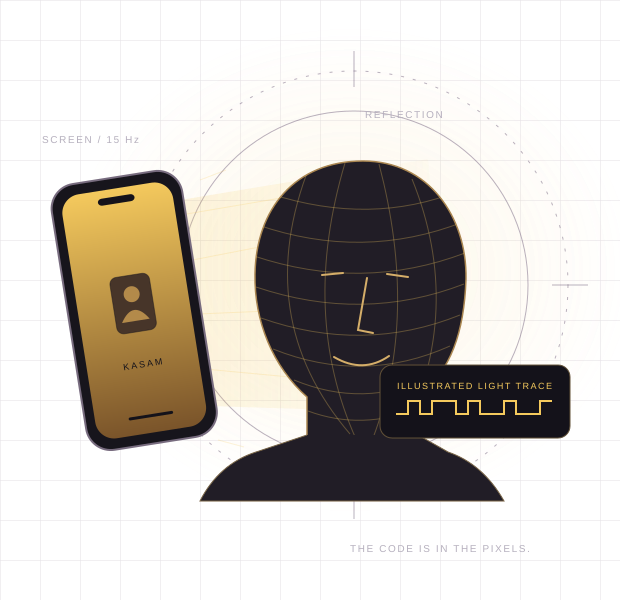

Your screen speaks.
A fresh seal code controls a small brightness flicker, 15 times a second.
LIGHT AS A WITNESS
A little light. A lasting oath.
Your screen writes a secret code into your video. An edit makes the oath break.
On your phone. Offline. Nothing uploaded.
Use another screen? Try Light-only mode →
THE IDEA, IN FOUR BEATS
A file can lose its metadata.
Light becomes part of the picture.
A fresh seal code controls a small brightness flicker, 15 times a second.
The screen lights your face. Your camera records the pattern into the pixels.
Check the downloaded video, including a compressed copy. Real WhatsApp tests are still needed.
The verifier looks for the pattern. A timing jump can reveal a cut or insertion.
TRY TO BREAK THE OATH
Remove a second and watch the light code's timing jump. Try a clearly labelled synthetic test before recording your own video.
Run the demoSEALED ●
ONE SECOND REMOVED ●
↑ Timing jumps. Kasam toot gayi.KASAM checks for a known light pattern and timing breaks. It does not prove that a statement is true, authenticate a person's identity, or detect every edit. Keep the seal code with people you trust.